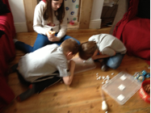
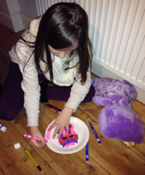

Resources
Resources are essential when working and developing social communication and interaction skills and play a vital role in all the work I do with young people and teenagers.
I adapt and use a variety of resources, so that every resource is specific to each child. I always ensure I use the young persons special interest when possible, so that I can help captivate their interest when learning key social skills.
I use a variety of motivation charts, visual timetables and emotional charts to help people affected by ASD. I try to adapt resources so they are always relevant to the young person I am working with, and always conscious that as they learn skills so resources have to change to keep the young persons interest. Games play a vital role in so much of the work I do. All games are made by myself, with the help of my own children who openly talk about their own difficulties and struggles with their own autism and aspergers. Thanks to my own children this gives me a unique insight into the lives of children affected by autism and aspergers, so many of the games can deal directly with issues faced on a daily basis by so many children on the spectrum. The games are fun but all have a relevant teaching and learning theme, whilst using interests and motivators which capture the young persons attention over and over again.
Some of the resources I use are specifically designed worksheets which help teach essential social skills related to anxiety, anger, emotional understanding, communication, conversational skills, empathy and idioms. These are very colourful resource sheets, which appeal to all children and teenager and can frequently be used in conjunction with many of my own adapted social skills games.
Teenagers and children with social communication and interaction difficulties are often very visual learners. They respond extremely well to visual aids as pictures and symbols are significantly easier for them to accept and process. Beneath are some quotes from young people on the spectrum who found the use of visual aids dramatically improved their communication and understanding of what was happening on a daily basis.
- ‘Words are scrambled letters mixed around in my head, said in different tones.” “Pictures make sense of the words you use”
- ‘Words are letters, some loud some quiet. They come from faces which can look funny or scary. Pictures make no noise, they just tell me what I need to hear.”
The resources I use cover many areas of difficulty and are aimed to help children and teenagers learn ways of developing strategies and skills to cope in a variety of situations. I use these resources within 1:1 work and within the specialised groups. Some of the resources I use are based on the following areas. Please note this is not a comprehensive list, just some examples:-
- Emotional understanding
- Conversational skills
- Sharing and Turn Taking
- Managing anxiety
- Strategies for helping with Anger
- Empathy
- Friendships
- Understanding my Thoughts
- Different ways of thinking and managing emotions
- Shoebox strategies Kit....Make my own survival code